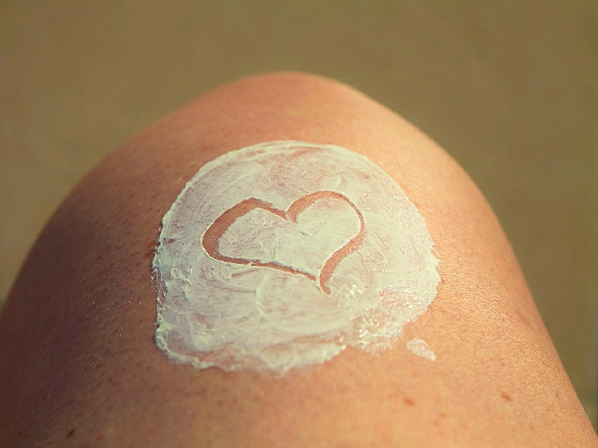

<!DOCTYPE html>
<html lang="ja">
<head>
    <!-- Global site tag (gtag.js) - Google Analytics -->
<script async src="https://www.googletagmanager.com/gtag/js?id=G-T7RR3SKHDK"></script>
<script>
  window.dataLayer = window.dataLayer || [];
  function gtag(){dataLayer.push(arguments);}
  gtag('js', new Date());

  gtag('config', 'G-T7RR3SKHDK');
</script>
    <meta charset="UTF-8">
    <meta name="viewport" content="width=device-width, initial-scale=1.0">
    <title>吸収剤？散乱剤？知って得する日焼け止めクリームの選び方</title>
    <meta name="description" content="日焼け止めには2種類あります。どちらがなぜいいか解説。">
    <link rel="stylesheet" href="cream.css">
    <link rel="stylesheet" href="https://use.fontawesome.com/releases/v5.15.2/css/all.css" integrity="sha384-vSIIfh2YWi9wW0r9iZe7RJPrKwp6bG+s9QZMoITbCckVJqGCCRhc+ccxNcdpHuYu" crossorigin="anonymous">
    <link rel="icon" href="favicon.ico" type="image/vnd.microsoft.icon">
  <link rel="apple-touch-icon" href="favicon.ico">
</head>
<body class="article" id="top">
    <div id="toTop"><i class="fas fa-3x fa-arrow-alt-circle-up"></i></div>
    <nav id="drawer">
        <!--		jQtoggle class="show"-->
        <ul>
            <li class="home"><a href="../../index.html">home</a></li>
            <li class="skin"><a href="../skin.html">skin</a></li>
            <li class="others"><a href="../../others/others.html">others</a></li>
        </ul>
                </nav>
                <header>
                    <a href="#top" class="hdrLogo"></a>
                    <div class="headerT"><p>ブッチの</p>
                        <p>ぶったまげ</p>
                        <p>ブログ！</p></div>
                    <label for="label">
                        <input type="checkbox" id="label">
                        <div id="navToggle">
                            <span></span>
                        </div>
                    </label>
        
                    <nav class="navWide">
                        <ul>
                            <li class="whome"><a href="../../index.html">home</a></li>
                            <li class="wskin"><a href="../skin.html">skin</a></li>
                            <li class="wothers"><a href="../../others/others.html">others</a></li>
                        </ul>
                    </nav>
                </header>
    <main>
        <section class="title">
            <h1>吸収剤？散乱剤？知って得する日焼け止めクリームの選び方</h1>
            <time>2020/11/26</time>
        </section>
        <section class="mv">
        <h1></h1>
        </section>
        <article>
            <h1>老けたくない</h1>
            <section class="wrapper">
                <div>
                    <p>とは言え全く外出しないのは無理な話。それなら日焼け止めを塗るしかない。
                        だったらどんなクリームを選べばいいのか？そもそも紫外線を防ぐ仕組みって何？そんな話。</div>
                <aside class="tc">
                    <ul>
                        <li><a href="#ray">害となる光線</a></li>
                        <li><a href="#cream">クリームの選び方</a></li>
                        <li><a href="#apply">うまい塗り方</a></li>
                    </ul>
                </aside>
            </section>
            
           
        <section class="image" id="ray">
            <h1>害となる光線</h1>
            
            <p>紫外線にはA、B、Cと3種類あり、地上に降るのはAとB。</p><br>
            <h2>UVA</h2>
            <p>力は弱いが波長は長い。肌の奥深くまで届き、表皮を突き抜けその下の真皮まで侵害する。真皮はコラーゲンやエラスチンで肌に弾力を持たせているので、
                ここが損傷すると深いしわやたるみができてしまう。コラーゲンは破壊されるとなかなか修復されない。
                それもそのはず。その周期は10〜20年とされるから。断片化したコラーゲンは保水成分ヒアルロン酸の生成を阻害し肌は益々酷い状態に。
                A波は一年中降り注ぎ、弱い力でじっくりじわじわ人体を老化させていく。</p><br>
                <h2>UVB</h2>
                <p>一方B波は力が強いが波長が短い。到達は真皮上層までにとどまる。ただし真皮上層まで届くということは表皮と基底膜を突き抜けるということであり、
                    強い力で破れた基底膜からメラノソームが落ちてしまう。これがシミの原因。
                    真皮は表皮のように上へ上へと古い細胞を押し出す仕組みがないから、いつまで経ってもシミが消えないというわけ。
                </p><br>
                <h2>ブルーライトと近赤外線</h2>
                <p>太陽光に占める紫外線の割合はわずか数％に過ぎない。最近では可視光でも光老化するという報告がある。
                    中でも問題視されるのがブルーライトと近赤外線。波長はUVA以上に長く、真皮のさらに下、皮下組織や筋膜にまで届く。</p>
                <p>ブルーライトといえばスマホやPCだが、LEDディスプレイから出る光にそれほど敏感になる必要はない。
                    気をつけるべきはやはり太陽で、太陽光はスマホの数百倍のブルーライトを放っている。</p>
            </section>

            <section class="image" id="cream">
                <h1>クリームの選び方</h1>
                
                <p>UVクリームには2種類ある。紫外線吸収剤と紫外線散乱剤だ。それぞれ紫外線を防ぐ仕組みが違う。</p><br>
                <h2>紫外線吸収剤</h2>
                <p>一昔前は主流だった。塗り心地がよく白浮きしないが、白シャツが黄ばむ。
                    UV波長のそれぞれの領域に反応する成分を配合しており、
                    紫外線が当たると熱エネルギーに変換して放出する仕組み。
                    ただしその変換自体が肌に対し有害であり、バリア機能を壊す。さらに有効成分は
                    化学反応で消費されてしまうので、塗り直しをしなければ紫外線に対し無防備になる。</p><br>
                <h2>紫外線散乱剤</h2>
                <p>紫外線反射剤とも呼ばれる。肌に優しい代わりに塗り心地は悪く、白浮きする。
                    表記を見てノンケミカルと書かれていればこちらと考えていい。
                    主成分は酸化チタンか酸化亜鉛のどちらか。肌の表面に金属の膜をはり、
                    紫外線を鏡のように反射させる。吸収剤よりも肌に優しいとはいえ、全く無害というわけではない。
                    反射の際に活性酸素を発生させるので、それがDNA破壊の原因になる。
                </p><br>
                <h2>どちらを選べばいいか</h2>
                <p>散乱剤が正解</p>
                <p>吸収剤は様々な成分が含まれていて、肌に対する影響が懸念される。
                    例えばメチルパラベンという成分は、化粧品に広く使われている防腐剤だが、
                    これを塗布した肌に紫外線を照射すると紫外線のみを照射した場合に比べて
                    細胞損傷の割合が増えたという研究報告がある。
                </p>
                <p>対して散乱剤は成分がシンプルであることが多くリスクを把握しやすい。
                    加えて言えば、ブルーライトや近赤外線は、対応する成分が配合されていない吸収剤で防ぐことはできないが、
                    散乱剤に必ず含まれる酸化亜鉛や酸化チタンはこれらも反射してくれるのだ。
                </p><br>
                <h2>使ってはいけない</h2>
                <p>逆に使ってはいけないのが、ナノ粒子化タイプのUVクリーム。
                    成分をナノサイズにすることによって紫外線の入る隙間を無くすことを謳うが、
                    サイズが小さいということはそれだけ成分が浸透しやすいということであり、
                    基底層にまで入り込めば、細胞を作る重要な組織を損傷させるリスクがある。
                    ナノ粒子化タイプのクリームは吸収剤、散乱剤問わず製品化されているので購入の際には
                    注意が必要だ。
                </p>
            </section>
            <section class="image" id="apply">
                <h1>うまい塗り方</h1>
                
                <p>上述の通り、全く無害な日焼け止めというのはない。それでも塗らないよりは遥かにいいわけだから、
                    なんとかしてデメリットを緩和させたい。方法としては2つある。</p><br>
                <h2>1.影響を表面にとどめる</h2>
                <p>日焼け止めを塗る前にクッションとなる保湿剤を塗る。
                    すると日焼け止め成分と紫外線が起こす化学反応の影響を
                    保湿剤の中で食い止めることができる。<br>
                    ただし肌に馴染ませるために合成界面活性剤を使用している保湿剤は、
                    却って肌を傷つけることになりかねない。
                    ワセリンは数ある保湿剤の中でもシンプルかつ無害でおすすめできる。
                    ワセリンには純度のクラスがあり、黄色ワセリン、白色ワセリン、プロペト、
                    サンホワイトの順で純度が高くなっている。下地に使うものとしては白色ワセリン以上
                    のものが推奨される。
                </p><br>
                <h2>2.抗酸化物質を一緒に塗る</h2>
                <p>ビタミンEやポリフェノールといった抗酸化物質は
                    活性酸素を打ち消す。豊富に含まれているのは
                    オリーブオイルやココナッツオイルなど。<br>
                    少し値が張るが、ラズベリーシードオイルは最も優れた効果を発揮する。
                    ラズベリーシードオイルにはそれ自体に日焼け止めの効果があり、
                    その数値は、SPFで50、PAなら＋＋と、並の日焼け止めクリームを上回る。
                </p>
            </section>
            <section>
                <h1>最後に</h1>
                <p>SPFとPAについて言えば、PAのみ高いものを選ぶのがいい。
                    というのもSPAは25のものと50のものとで、紫外線透過率にわずか1％の違いしか
                    ないからだ。<br>
                    それよりも重要なのはこまめに塗り直すことだ。成分が消費されたり
                    汗で流れたりで、気づけば無防備になっていたということになりかねない。
                    また日焼け止めクリームの有効性は一般的な使用量よりも多量に
                    塗布して試験されているので、いかにSPFの高い日焼け止めを塗ったとしても、
                    量が足りずメーカーの意図した効果を発揮できていなかったということも起こり得る。<br>
                    手の平に500円玉程度の量を目安に取り、目の周りなど忘れがちな部分にも満遍なく塗り、
                    肌に馴染むまで少し時間をおいてから出かけることをおすすめする。
                </p>
            </section>
         
        
    </article>
    </main>
    <footer>
        <div class="fwrapper">
            
            <small>Copyright &copy; Butch. All rights reserved.</small>
        </div>
    </footer>
    <script
  src="https://code.jquery.com/jquery-2.2.4.min.js"
  integrity="sha256-BbhdlvQf/xTY9gja0Dq3HiwQF8LaCRTXxZKRutelT44="
  crossorigin="anonymous"></script>
    <script src="script.js"></script>

</body>
</html>